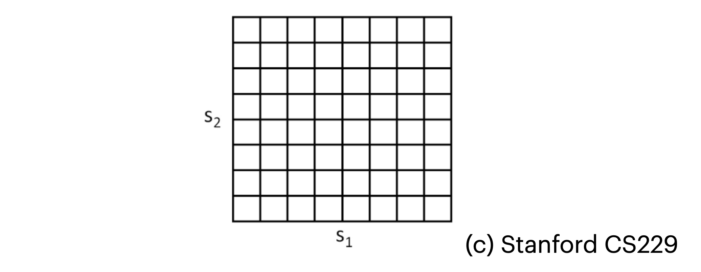
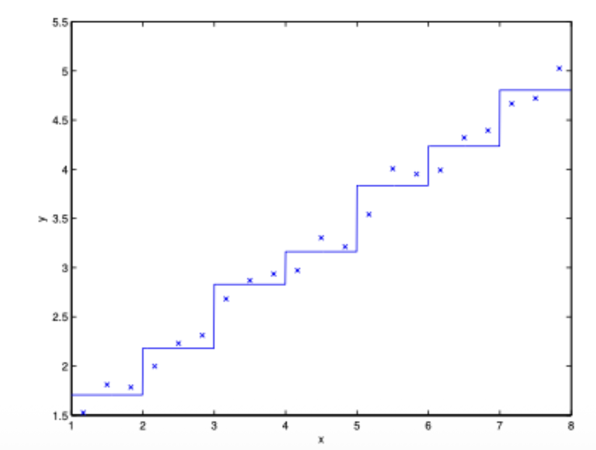

1. 강화학습의 동기 (The Idea of Reinforcement Learning)
기계학습 중 가장 널리 알려진 지도 학습(Supervised Learning) 패러다임은 훈련 세트에 주어진 라벨(label) \(y\)를 모방하도록 모델을 학습시킵니다. 즉, 입력에 대해 항상 모호함 없는 ’정답’이 주어지는 환경을 가정합니다.
하지만 로봇 제어나 자율 주행과 같은 순차적 의사 결정(Sequential Decision Making) 문제에서는 매 순간 어떤 행동이 ’정답’인지 명시적인 지도(explicit supervision)를 제공하기가 매우 어렵습니다. 예를 들어, 네 발 달린 로봇이 처음 걷는 법을 배울 때 어떤 관절을 어떻게 움직이는 것이 ’정답’인지 우리는 알 수 없습니다.
강화학습(Reinforcement Learning, RL)은 이러한 환경에서 정답 대신 보상 함수(Reward Function)를 알고리즘에 제공합니다. 학습 에이전트(agent)는 자신이 잘하고 있는지, 못하고 있는지를 보상을 통해 파악하며 스스로 최적의 행동 방식을 학습하게 됩니다. 이 프레임워크는 자율 헬리콥터 비행, 4족 보행 로봇, 휴대폰 네트워크 라우팅, 마케팅 전략 수립 등 다양한 분야에서 성공을 거두고 있습니다.
2. 마르코프 결정 과정 (Markov Decision Processes, MDP)
- 강화학습 문제를 수학적으로 모델링하는 핵심 프레임워크가 바로 마르코프 결정 과정(MDP)입니다. MDP는 아래의 5가지 요소로 구성된 튜플 \((S, A, \{P_{sa}\}, \gamma, R)\)로 정의됩니다:
- \(S\) (State): 가능한 모든 상태의 집합입니다 (예: 헬리콥터의 모든 가능한 위치 및 자세).
- \(A\) (Action): 에이전트가 취할 수 있는 행동의 집합입니다 (예: 조종 스틱의 방향).
- \(P_{sa}\) (State Transition Probabilities): 특정 상태 \(s \in S\)에서 행동 \(a \in A\)를 취했을 때, 다음 상태로 이동할 확률 분포를 나타냅니다. 즉, 행동의 결과로 어떤 상태 \(s'\)에 도달할지에 대한 불확실성을 모델링합니다.
- \(\gamma\) (Discount Factor): \(0 \le \gamma < 1\) 범위의 값을 가지는 할인 인자로, 미래의 보상을 현재 가치로 환산할 때 사용됩니다.
- \(R\) (Reward Function): \(R: S \times A \mapsto \mathbb{R}\) 혹은 \(R: S \mapsto \mathbb{R}\) 형태로 정의되며, 특정 상태에서 받는 즉각적인 보상을 의미합니다.
2.1. 과정과 총 보상
시간이 흐름에 따라 MDP는 다음과 같은 궤적(trajectory)을 생성합니다:
- 초기 상태 \(s_0\)에서 시작하여 에이전트가 행동 \(a_0 \in A\)를 선택하면 , 확률 분포 \(s_1 \sim P_{s_0a_0}\)에 따라 다음 상태 \(s_1\)으로 무작위 전이합니다. 이어서 \(a_1\)을 선택하고 \(s_2 \sim P_{s_1a_1}\)로 전이하는 과정이 반복됩니다. \[s_0 \rightarrow a_0 \rightarrow s_1 \rightarrow a_1 \rightarrow s_2 \rightarrow a_2 \rightarrow s_3 \rightarrow \dots\]
이러한 일련의 과정 속에서 에이전트가 얻는 총 보상(Total Payoff)은 시간에 따라 \(\gamma\)만큼 할인된 보상의 합으로 주어집니다. \[R(s_0, a_0) + \gamma R(s_1, a_1) + \gamma^2 R(s_2, a_2) + \dots\]
상태만의 함수로 보상을 나타낸다면 다음과 같습니다. \[R(s_0) + \gamma R(s_1) + \gamma^2 R(s_2) + \dots\]
강화학습의 궁극적인 목표는 예상되는 총 보상의 최댓값(Expected Value of the Total Payoff)을 달성하기 위한 행동의 기준을 찾는 것입니다.
2.2. 정책(Policy)과 가치 함수(Value Function)
정책(\(\pi\)): 상태를 행동으로 매핑하는 함수 \(\pi: S \mapsto A\) 입니다. 정책 \(\pi\)를 따른다는 것은, 에이전트가 상태 \(s\)에 있을 때 항상 행동 \(a = \pi(s)\)를 취한다는 뜻입니다.
가치 함수(\(V^\pi(s)\)): 어떤 상태 \(s\)에서 시작하여 정책 \(\pi\)를 따를 때 얻게 될 할인된 총 보상의 기댓값입니다. \[V^{\pi}(s) = \mathbb{E}[R(s_0) + \gamma R(s_1) + \gamma^2 R(s_2) + \dots | s_0 = s, \pi]\]
이 \(V^\pi(s)\)는 재귀적인 성질을 가지며, 이를 나타낸 것이 바로 벨만 방정식(Bellman Equation)입니다. \[V^{\pi}(s) = R(s) + \gamma \sum_{s' \in S} P_{s\pi(s)}(s') V^{\pi}(s')\]
우변은 즉각적인 보상 \(R(s)\)와, 다음 상태 \(s'\)에서 얻을 미래 보상의 기댓값 \(\mathbb{E}_{s' \sim P_{s\pi(s)}}[V^\pi(s')]\)을 할인된(\(\gamma\)) 형태로 더한 것입니다.
2.3. 최적 가치 함수와 최적 정책
우리의 목표는 가능한 모든 정책 중에서 가장 높은 가치를 반환하는 최적 가치 함수(Optimal Value Function, \(V^*(s)\))를 찾는 것입니다. \[V^*(s) = \max_{\pi} V^{\pi}(s)\]
이를 벨만 방정식 형태로 재귀적으로 표현하면(Bellman Optimality Equation), 다음과 같습니다: \[V^*(s) = R(s) + \max_{a \in A} \gamma \sum_{s' \in S} P_{sa}(s') V^*(s')\]
이 \(V^*(s)\)를 알고 있다면, 상태 \(s\)에서 최적의 정책 \(\pi^*(s)\)는 당연히 미래의 가치를 최대화하는 행동 \(a\)를 취하는 것입니다. \[\pi^*(s) = \arg\max_{a \in A} \sum_{s' \in S} P_{sa}(s') V^*(s')\]
최적 정책 \(\pi^*\)는 모든 상태 \(s\)에서 \(V^*(s) = V^{\pi^*}(s) \ge V^\pi(s)\)를 만족하며, 초기 상태에 구애받지 않고 언제나 사용할 수 있는 보편적인 최적 해가 됩니다.
3. 유한 상태 MDP를 위한 해법 (Value & Policy Iteration)
- 상태와 행동 공간이 유한하고(\(|S|, |A| < \infty\)) , 전이 확률 \(P_{sa}\)와 보상 \(R\)을 정확히 안다고 가정할 때, \(V^*\)를 구하는 대표적인 두 알고리즘이 있습니다.
3.1. 가치 반복 (Value Iteration)
- 벨만 방정식을 업데이트 규칙으로 사용하여 가치 함수 추정치를 반복적으로 갱신하는 방법입니다.
- 모든 상태 \(s\)에 대해 \(V(s) := 0\)으로 초기화합니다.
- 수렴할 때까지 다음을 반복합니다: 모든 상태 \(s\)에 대해 \(V(s) := R(s) + \max_{a \in A} \gamma \sum_{s'} P_{sa}(s') V(s')\)
- 이때 업데이트 방식에는 두 가지가 있습니다:
- 동기식(Synchronous Update): 모든 상태의 새로운 \(V(s)\)를 먼저 계산한 후, 한꺼번에 이전 값을 덮어씁니다 (“Bellman backup operator”를 한 번 적용하는 것과 동일).
- 비동기식(Asynchronous Update): 상태들을 임의의 순서로 순회하며 \(V(s)\)를 하나씩 갱신합니다.
- 어떤 방식을 사용하든 가치 반복 알고리즘은 결국 최적 가치 \(V^*\)로 수렴함이 증명되어 있습니다.
3.2. 정책 반복 (Policy Iteration)
가치 함수 대신 정책 자체를 번갈아 가며 갱신하는 방법입니다.
- 정책 \(\pi\)를 무작위로 초기화합니다.
- 수렴할 때까지 다음을 반복합니다:
- Policy Evaluation: 현재 정책에 대한 가치 \(V := V^\pi\)를 계산합니다. (주로 선형 방정식 시스템을 풀어 계산)
- Policy Improvement: 각 상태 \(s\)에 대해 정책을 다음과 같이 업데이트(탐욕적 갱신)합니다. \[\pi(s) := \arg\max_{a \in A} \sum_{s'} P_{sa}(s') V(s')\]
작은 규모의 MDP에서는 정책 반복이 매우 빠르게 수렴합니다. 하지만 상태 공간이 큰 경우 \(V^\pi\)를 구하기 위해 거대한 선형 방정식을 풀어야 하므로 계산 비용이 높아, 실무에서는 가치 반복(Value Iteration)이 더 자주 사용되는 경향이 있습니다.
[참고] 정책 반복과 가치 반복의 연결고리
- 정책 반복의 Evaluation 단계(선형 방정식 풀이)는 반복적인 벨만 업데이트(\(k\)번 반복)로 근사할 수 있습니다. 만약 이 업데이트를 단 \(k=1\)번만 수행한다면, 이는 가치 반복(Value Iteration) 알고리즘과 정확히 동일해집니다. 반대로 \(k=\infty\)일 때가 순수한 정책 반복에 해당합니다.
4. 모델 학습 (Learning a Model for MDP)
현실의 많은 문제에서는 \(P_{sa}\)와 \(R\)이 명시적으로 주어지지 않습니다. 이런 경우 데이터를 통해 이들을 추정해야 합니다. MDP에서 에이전트가 직접 환경과 상호작용하여 얻은 \(n\)개의 에피소드(trials) 데이터가 있다고 가정해 봅시다.
여기서 얻은 데이터를 바탕으로 전이 확률의 최대우도추정(MLE)을 계산할 수 있습니다. \[P_{sa}(s') = \frac{\text{상태 } s\text{에서 행동 } a\text{를 취해 } s'\text{로 전이된 횟수}}{\text{상태 } s\text{에서 행동 } a\text{를 취한 총 횟수}}\]
이 카운트(분자, 분모)를 저장해두면, 새로운 경험이 쌓일 때마다 전이 확률을 매우 효율적으로 업데이트할 수 있습니다. 보상 \(R(s)\) 역시 관측된 보상들의 평균값으로 추정할 수 있습니다.
추정된 모델(\(P_{sa}, R\))을 이용해 다시 Value Iteration을 수행하여 \(V\)와 \(\pi\)를 갱신하는 과정을 반복함으로써, 미지의 환경에서도 최적 정책을 학습할 수 있습니다.
5. 연속 상태 공간과 이산화 (Continuous State MDPs)
지금까지는 유한한 상태를 가정했지만, 자동차의 제어(위치, 방향, 속도 등)처럼 상태 공간이 \(S = \mathbb{R}^d\) 형태의 무한한 연속 공간인 경우가 많습니다.
이를 해결하기 위한 가장 직관적인 방법은 상태 공간을 격자(grid) 형태로 나누어 유한한 개수의 이산 상태 \(\bar{S}\)로 만드는 이산화(Discretization)입니다.

- 그러나 이산화 방식에는 두 가지 치명적인 한계가 존재합니다:
- 단순한 표현력 (Naive Representation): 각 격자 안에서는 가치 함수가 상수(constant)라고 가정하게 됩니다. 아래 그림처럼 부드러운 연속 함수를 계단식으로 근사하게 되며, 정확도를 높이려면 격자를 매우 잘게 쪼개야 합니다.
- 차원의 저주 (Curse of Dimensionality): \(d\)차원의 상태 공간을 각각 \(k\)개의 구간으로 나누면, 총 이산 상태의 수는 \(k^d\)개가 됩니다. 이는 차원이 커질수록 상태의 수가 지수적으로 폭발함을 의미하며, 1D/2D 환경에서는 작동하지만 고차원에서는 거의 불가능에 가깝습니다.

6. 가치 함수 근사 (Value Function Approximation)
이산화의 한계를 극복하기 위해 연속 상태의 \(V^*\)를 직접 함수로 근사하는 가치 함수 근사(Value Function Approximation) 기법이 사용됩니다.
이 기법을 위해 우리는 환경의 물리 엔진 역할인 시뮬레이터(Simulator)를 블랙박스 모델로 가정합니다.
- 시뮬레이터에서 추출된 데이터 시퀀스를 활용하여 \(s_t\)와 \(a_t\)로부터 \(s_{t+1}\)을 예측하는 모델을 선형 회귀(Linear Regression) 등으로 학습할 수 있습니다. \[\arg\min_{A,B} \sum_{i=1}^n \sum_{t=0}^{T-1} ||s_{t+1}^{(i)} - (A s_t^{(i)} + B a_t^{(i)})||_2^2\]
- 이렇게 학습된 행렬 A, B를 통해 결정론적 모델(Deterministic) 혹은 노이즈 \(\epsilon_t \sim \mathcal{N}(0, \Sigma)\)가 포함된 확률론적 모델(Stochastic)을 만들 수 있습니다.
6.1. Fitted Value Iteration 알고리즘
연속적인 상태 공간(\(S = \mathbb{R}^d\))과 작고 이산적인 행동 공간(\(A\))을 가질 때, 가치 반복의 적분을 통한 갱신식을 유한한 샘플들의 지도 학습 문제로 치환하는 알고리즘입니다.
먼저 가치 함수를 피처 매핑(feature mapping) \(\phi(s)\)의 선형 결합인 \(V(s) = \theta^\top \phi(s)\) 형태로 정의합니다.
알고리즘의 동작은 다음과 같습니다:
- 상태 \(S\)에서 무작위로 \(n\)개의 상태 \(s^{(1)}, \dots, s^{(n)}\)을 샘플링합니다. 파라미터 \(\theta:=0\)으로 초기화합니다.
- 각 상태 \(s^{(i)}\) 및 행동 \(a\)에 대해:
- 시뮬레이터를 사용해 \(s^{(i)}\)에서 행동 \(a\)를 취했을 때의 다음 상태 \(s'_1, \dots, s'_k \sim P_{s^{(i)}a}\)를 \(k\)번 샘플링합니다.
- 기댓값의 근사치 \(q(a)\)를 계산합니다: \[q(a) = \frac{1}{k} \sum_{j=1}^k R(s^{(i)}) + \gamma V(s'_j)\]
- 최적 행동에 대한 추정치 타겟 \(y^{(i)}\)를 구합니다: \[y^{(i)} = \max_a q(a)\]
- 생성된 데이터셋 \(\{(s^{(i)}, y^{(i)})\}\)에 대해 선형 회귀를 수행하여 \(\theta\)를 갱신합니다. \[\theta := \arg\min_\theta \frac{1}{2} \sum_{i=1}^n (\theta^\top \phi(s^{(i)}) - y^{(i)})^2\]
이산 상태 가치 반복에서는 \(V(s^{(i)}) := y^{(i)}\)로 직접 값을 대입했다면, Fitted Value Iteration은 파라미터 최적화를 통해 \(V(s^{(i)}) \approx y^{(i)}\)가 되도록 곡선을 맞추는(Fitted) 방식을 취합니다. 이 알고리즘은 이론적으로 무조건 수렴성이 보장되지는 않지만, 실무적으로는 대부분 잘 수렴하여 뛰어난 성능을 냅니다.
만약 결정론적(Deterministic) 시뮬레이터를 사용한다면 \(k=1\)로 단순화하여 시뮬레이션 비용을 크게 절약할 수 있습니다. 또한 \(\epsilon_t\) 노이즈가 작은 확률론적 모델에서도 \(k=1\)로 두고 \(\mathbb{E}_{s}[V(s')] \approx V(f(s,a))\)로 근사하는 테크닉이 자주 활용됩니다.
7. Summary
- 이번 포스트에서는 다음과 같은 강화학습의 핵심 기초를 다루었습니다.
- 지도 학습과의 차별점 및 보상(Reward) 기반의 학습 동기
- 마르코프 결정 과정(MDP)의 구성 요소 및 벨만 방정식
- 유한 상태를 위한 Value Iteration 및 Policy Iteration 알고리즘
- 연속 상태를 처리하기 위한 이산화(Discretization)의 한계와, 선형 회귀 기반의 가치 함수 근사(Fitted Value Iteration)